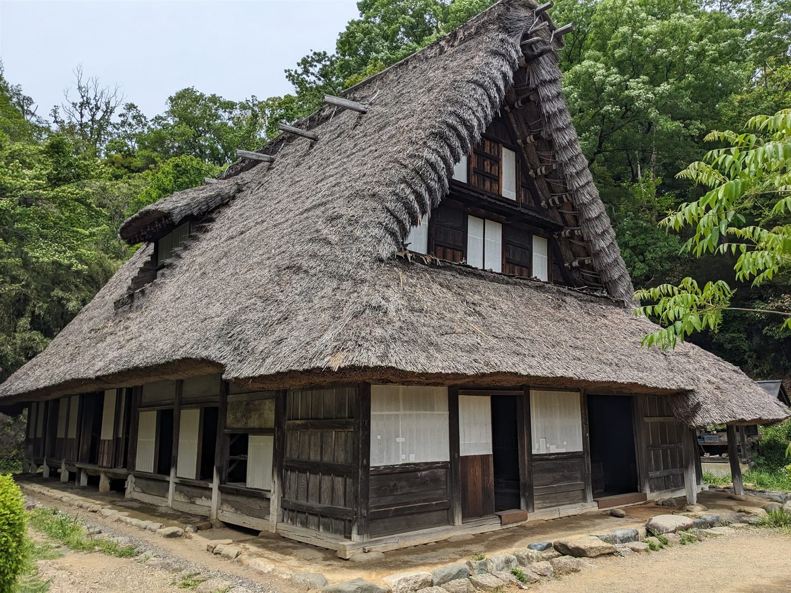
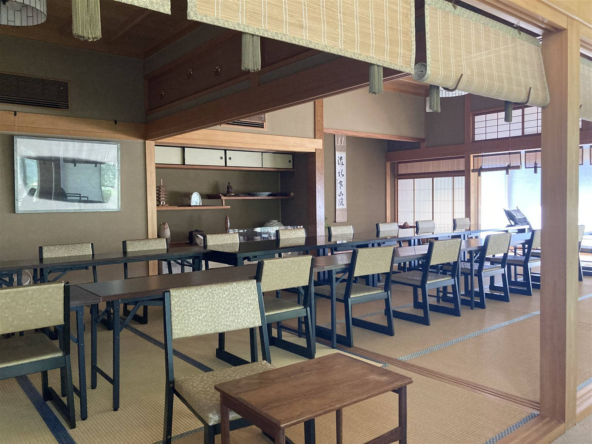
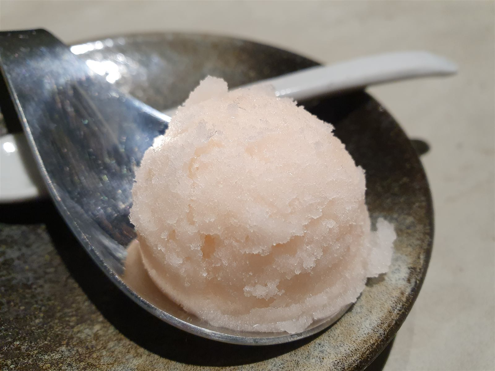
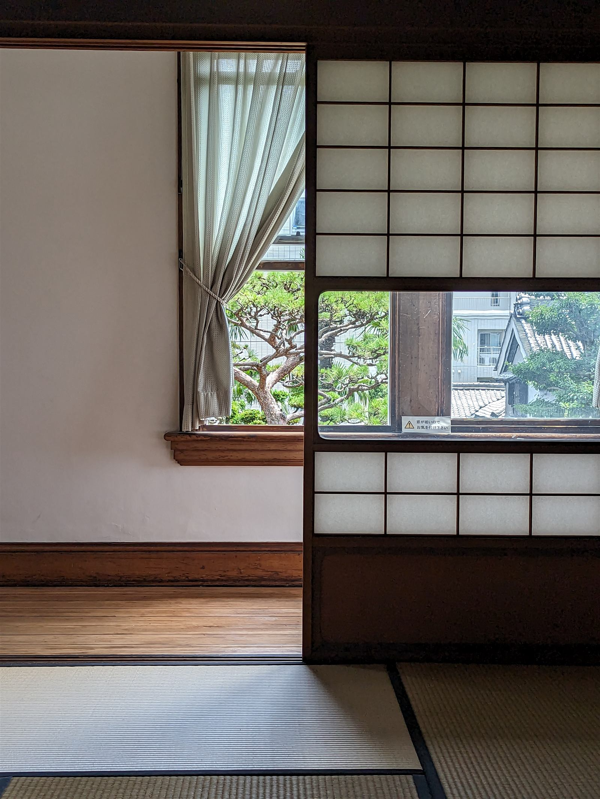
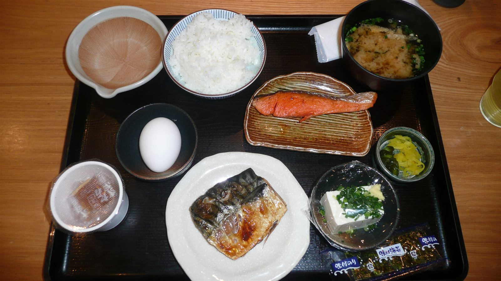

タレカツ丼
甘じょっぱい秘伝の醤油ダレが染み込んだ、地元で長く愛される逸品。薄めの衣でサクッと香ばしいカツに、阿賀野市産のお米がよく合います。

新潟県阿賀野市関屋 小川亭 ― 秘伝ダレのタレカツ丼と、ボリューム満点の揚げ物定食。
小川亭について
新潟県阿賀野市関屋、趣を残す古民家を店構えに、小川亭は地元の皆さまに長く親しまれてきた定食店です。店内はすべて座敷席。広々とした空間に足を踏み入れると、「昔のお屋敷みたい」「おじいちゃんの家を思い出す」と口コミでも評判の、どこか懐かしい時間が流れています。
小さなお子さま連れのご家族も、大人数のグループも、靴を脱いでゆったりと腰を落ち着け、日々の食事をゆっくりと楽しんでいただけます。地元で愛され続けてきた味と空間を、どうぞ座敷の心地よさとともにお召し上がりください。

OUR COMMITMENT
代々受け継がれてきた、甘じょっぱい秘伝のタレ。タレカツ丼の味の要です。
地元阿賀野市で育ったお米をふっくらと炊き上げ、揚げ物との相性を大切にしています。
ご注文をいただいてから、できるだけお待たせしないよう心がけています。お客様からも「提供が早い」と評判です。
どのメニューをご注文いただいても、食後にさっぱりとしたシャーベット(アイス)をお出ししています。口コミでも「食後のシャーベット(アイス)が美味しかった」との声をいただいています。

さっぱりとした食後のシャーベット(イメージ)
気になるメニューや空き状況は、まずはお電話でお気軽にどうぞ。
電話をかける0250-67-2348GALLERY


VOICE
店内は広々で、すべて座敷席。昔のお屋敷みたいで、おじいちゃんの家を思い出しました。
ボリューム満点で、特にカキフライは牡蠣の味がしっかり感じられました。食後のシャーベットもさっぱりしていて美味しかったです。
タレカツ丼は地元で長く愛される逸品。甘じょっぱい秘伝の醤油ダレに、薄めの衣でサクッと香ばしいカツ。阿賀野市産のお米との相性も抜群で、新潟市内の有名店にも引けを取らないという声も。趣のある古民家の広いお座敷で、ゆったりと食事ができます。
ジャンボエビフライ定食をいただきました。お昼時は次々と席が埋まる人気ぶり。揚げたてで美味しく、ボリュームも満点でした。
ACCESS
| 店名 | 小川亭 |
|---|---|
| 住所 | 新潟県阿賀野市関屋 (詳しい番地はお電話にてご確認ください) |
| 電話 | 0250-67-2348 |
| 営業時間 | お電話にてご確認ください |
| 定休日 | お電話にてご確認ください |
| 駐車場 | お電話にてご確認ください |
| @ogawa_tei |
お盆期間など混雑が予想される時期は、当日のご予約をお受けできない場合もございます。空き状況やご予約については、お電話にてお気軽にお問い合わせください。
まずはお電話でお気軽にどうぞ。
0250-67-2348一部の写真はフリー素材のイメージです。実際の店内・お料理写真は貴店ご提供のものに差し替えます